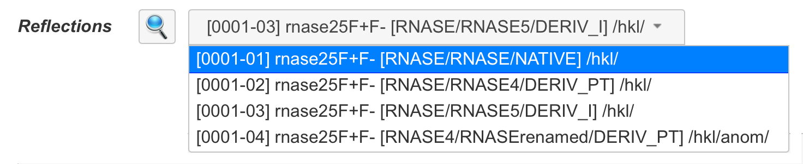
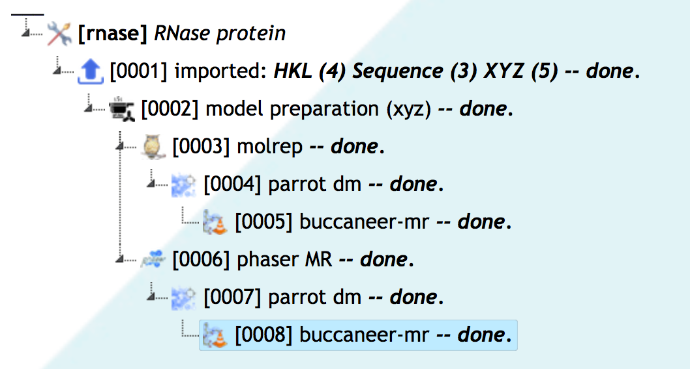
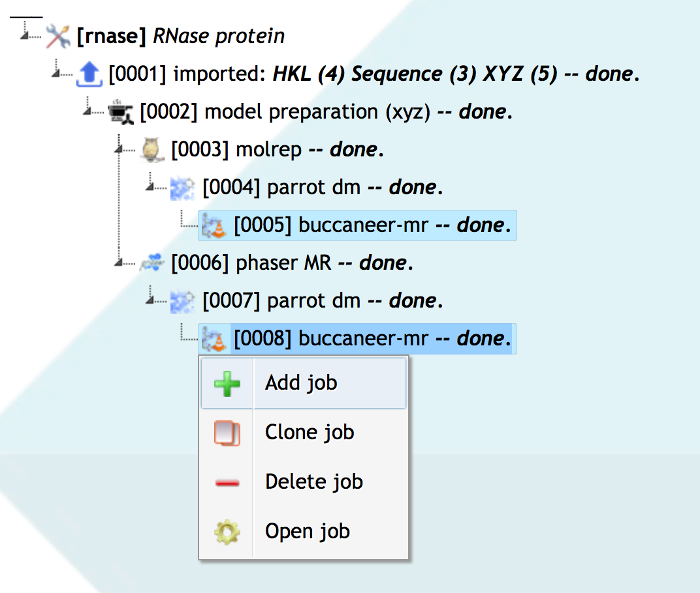
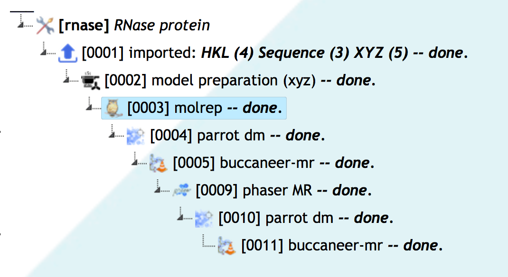

Data Management
1. NO FILES!
From user's perspective, jsCoFE operates with data objects, rather than raw
files. There are only 2 points where a user deals with actual files:
(1) importing and (2) exporting data to/from jsCoFE Project. Data objects
correspond to entities that are passed from task to task as a whole. Therefore,
for all tasks, except Data Import, require choice of data objects, rather than
raw files. This is done in form of drop-down selectors, pre-filled with data
objects, relevant to particular task and input field only, which are in the
visibility scope (see below). For example, input filed "
Reflections"
will contain only merged reflection datasets (in this instance, either with
or without anomalous data):
| Figure 1. Input data
selector |
 |
Data objects have one of pre-defined type and optional sub-types. The following
data objects with optional subtypes are defined in jsCoFE:
| Type |
Description |
Subtypes |
Produced in tasks |
|---|
| Unmerged |
Unmerged reflections dataset |
|
Data Import |
|---|
| HKL |
Merged and scaled reflections dataset |
anomalous |
Data Import,
Data Reduction |
|---|
| Symmetry |
A set of compatible space groups, associated with the content of
either Unmerged or HKL dataset. Symmetry object exists only in form of
the reflection dataset meta-data and is created automatically upon
introducing the dataset to the Project. |
|
N/A |
|---|
| Sequence |
Macromolecular sequence |
unknown |
Data Import,
Simbad,
Convert XYZ to Revision |
|---|
| ASU |
Content of Asymmetric Unit. This is a combination object, containing
Sequence objects and some derived data, such as stoichiometric coefficients,
an estimate of solvent fraction and Matthews coefficients and
probabilities. ASU object exists only as part of Structure Revision
(see below). |
unknown |
Define ASU,
Simbad,
Convert XYZ to Revision |
|---|
| XYZ |
Macromolecular coordinates |
|
Data Import |
|---|
| Ensemble |
Ensemble of macromolecular models, associated with a sequence |
|
Ensemble Preparation from Sequence/XYZ |
|---|
| Structure Data |
Crystal structure as a combination of symmetry, macromolecular
coordinates, electron density and phases |
EP, MR,
substructure |
Any phasing task,
Convert XYZ to Revision |
|---|
| Ligand |
Ligand structure with crystallographic restraints for refinement |
|
Make Ligand |
|---|
| Structure Revision |
Collection of experimental and derived (computed) data, representing the
currently achieved stage in structure solution process. Subject to
particular stage, Structure Revision may include HKL, ASU, Structure
and Ligand objects. |
hkl, anomalous, asu, phases, xyz, substructure, ligands, waters |
Define ASU,
Simbad,
Convert XYZ to Revision |
|---|
All data typing and naming is done in jsCoFE completely automatically,
and the above table should be used only for reference.
2. Data Object Naming
All data objects are named according to the following template:
[NNNN-MM] name /type/subtype(s)
where:
| |
NNNN | |
Serial number of job, which produced the data object |
| MM | |
Serial number of data object in the job, which produced it |
| name | |
Given name, which can be derived either from the name of related
file imported to the Project, or from program or task name that
created the respective data, or from the output id of
the Job Dialog
|
| type | |
Type of data object (see above) |
| subtype(s) | |
Optional subtypes (see above) |
3. Data Object Visibility
By default, each new job has access to data objects, imported or generated by
all its parent jobs. For example, in the following project:
| Figure 2. Sample project |
 |
job [0008] has access to data imported in job [0001], MR model(s) made in job
[0002] and structures produced by jobs [0006] and [0007]. However, job [0008]
cannot (by default) access structures produced by jobs [0003] and [0004] because
they belong to a different branch of job tree.
Most of structure solution process may be represented as a job tree, similar
to one in Figure 2. However, sometimes you may need to use data from different
branches in a subsequent job. For example, you may want to structurally compare
outputs of jobs [0005] and [0008] from Figure 2, using Gesamt software. This can
be done by multiple selection of jobs, outcome of which needs to be used, and
then right-clicking on one of them in order to add the new job through the
dropdown menu:
| Figure 3. Using data for
new job from
different
branches
by multiple job
selection |
 |
Choosing "Add job" from the dropdown menu will bring up the
Task List Dialog, from which the "Structural
comparison with Gesamt" task can be chosen. The new job will be added as a
child to the right-clicked job ([0008] in the above Figure) and will see only data
produced in jobs selected. Multiple selection is achieved by clicking on
jobs lines with key "Alt" ("Apple" on Mac computers) pressed.
4. Data Objects and Project Branching
Limitation of data visibility along branches of the job tree helps to keep
the content of input data selectors in job dialogs (just like one shown above in
Figure 1) as conscise and relevant as possible. For new jobs, jsCoFE will always
offer initially data settings based on most recenty generated data (in given branch
of the job tree), as well as associated data. For example, a new refinement job
will have, as initial setings, the most recently produced
Structure Data and
reflection dataset (
HKL) used to produce it. However, you can always
change these settings, e.g., in order to refine structure against another
compatible dataset.
It is therefore clear that you want to grow your Project (the job tree) in such
a way that needed data is always in the scope, and you do not have to resort to
breaking the default behaviour by adjusting the data visibility scope with
mutiple job selection. Following these principles will help to keep your projects
in the most logical way, where the structure solution pathway can be easily
identified (as a branch that led to best results).
In order to demonstrate the difference, consider that the rnase project
from Figure 2 could have been developed in a single branch:
| Figure 4. Single-branch
project |
 |
where jobs [0009], [0010] and [0011] are completely identical to jobs [0006],
[0007] and [0008] in Figure 2. The only advantage of such a linear development
is that all data objects produced ara available for all new jobs, so that you can
compare structures obtained in job [0005] and [0011] without resorting to
multiple job selection. The disadvantage of non-branching is the gradual lose of
clarity of the structure solution process with growing number of trials, as well
as growing inconvenience of dealing with long lists of input data to be chosen
for new tasks. While these disadvantages do not seem to be dramatic in case of
simple short projects like in Figures 2-4, they may become critical in not so
unusual case of projects having 100s of jobs.
jsCoFE does not impose any specific rules for project branching. However, it may
be convenient to branch when you:
- start working with a new crystal / reflection dataset
- start a new route of structure solution (e.g. trying to solve structure
stage-by-stage after a failure of automated solvers)
- try another method of phasing (e.g. EP after MR); however,
do not branch if you are planning a hybrid phasing, such as using
MR phases in combination with those obtained from heavy atom location
- start working with new model for molecular replacement
- change the composition of asymmetric unit
- want to rerun the same job with different input parameters (job cloning)